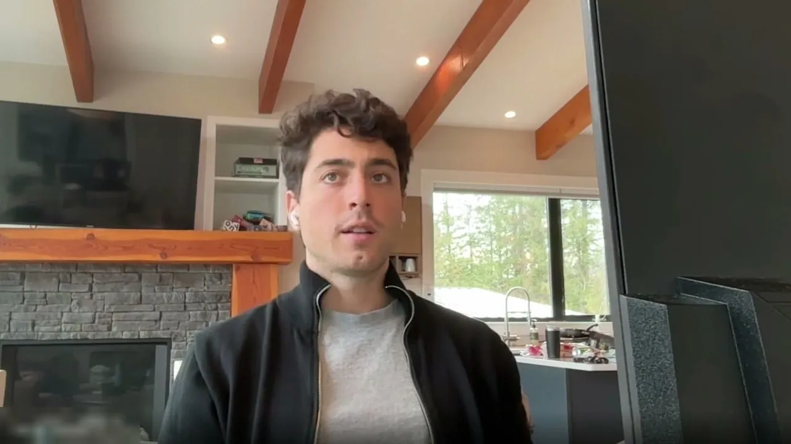
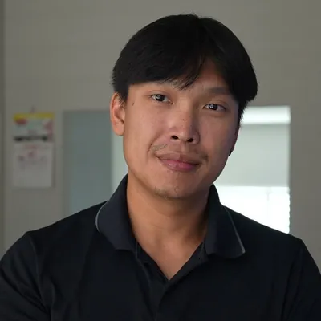
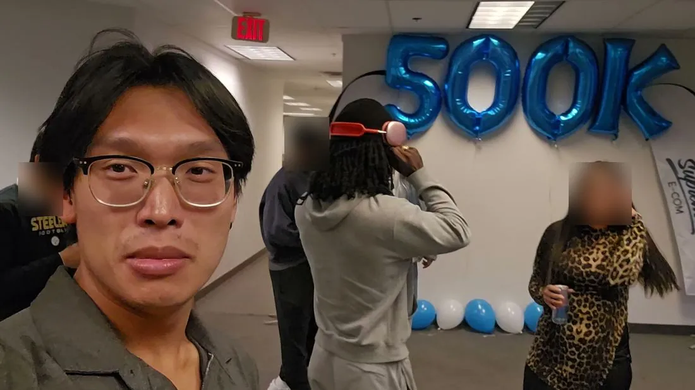
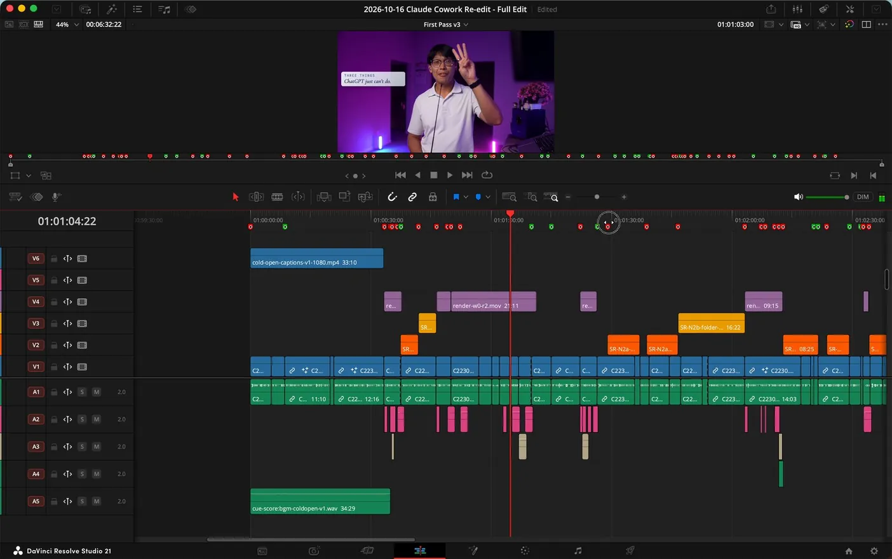

For businesses that make content
10x your content without hiring another editor.
We build an AI editing workflow around your footage and style, then train you or one editor to run it.
Book your call
Book a fit call
Let’s find your editing bottleneck.
We’ll discuss your videos, the person running the workflow and whether the 10x Content System fits.
Book my free callResults
What changed for Carles’s agency
Before
About 2 reels a day
plus one long video a week, all cut by paid editors.
After
25 reels a day
About 100 reels in 4 days, with the same team, on the $100 Claude plan.

“It’s a no-brainer. Like when you told me the investment, I was like, ‘Sure.’”Carles A., agency owner and coaching client
On the call, we’ll…
- Find the biggest editing bottleneck in your business right now
- Look at your videos and footage
- Talk through who would run the workflow, you or one editor
- Check whether the 10x Content System fits

Who you’ll work with
I’m Andy.
I was the content director of Supreme Ecom. We grew it from 400,000 to over 630,000 subscribers, did more than 10 million views, and made $500K in revenue from YouTube alone.
Now I produce a video in one day instead of three, with no video editors at all, just the video editing agent I built for my own business.


The 10x Content System
30 days to build it. Then 30 days of support.
Here’s how we get you there. Each week we build out the system with you or one of your team members. We start from how you edit videos now, all the way through to publishing, and by the end of those 30 days, you’ll have a fully set-up system for one format of your choice. You’ll also have all the recordings, so you can rebuild it for your next format.
Then I stick around for another 30 days to help with the technical problems you hit as you build your next one.
Weekly 60-minute sessionsLive, for the first 30 days
A full system by day 30For one format of your choice
Every session recordedSo you can rebuild it for your next format
Who this is for
- You run an established business with recurring video needs and usable footage.
- You or one designated operator commits to weekly sessions during the first 30 days.
- You’ll do regular practice throughout coaching and support.
Who this is NOT for
- You want someone to do ongoing editing or publishing for you. This teaches your operator; it doesn’t include that.
- You don’t have the time to practice between sessions.
We check fit before enrollment.
Book your call
Book a fit call
Let’s find your editing bottleneck.
Before you book
What if AI gets the edit wrong?
Learning to review and correct the output is part of the work. We agree a quality standard, look at what the workflow produces and work through specific issues. You’ll still need to review your videos; first-generation output isn’t automatically ready to publish.
Can my team member learn instead of me?
Yes. We focus on one primary operator, either you or one designated team member. The owner is welcome to join sessions.
Will this work for my video format?
We check that before enrollment, using your business goal, footage, operator and technical requirements. The offer is not limited to short-form. We select one format and agree practical input and output limits.
Can I adapt it for other brands or clients?
We build around one initial brand/style and teach basic adaptations within the chosen format. You can use those skills independently for other brands or clients. Additional custom builds require separate scope.
What software and subscriptions will I need?
You’ll need DaVinci Resolve Studio and a Claude subscription. Carles runs his whole system on the $100 Claude plan. We confirm the exact setup for your format on the call.
A 30-day guarantee
If you don’t have a fully set-up system you’re happy with by the end of the first 30 days, you get your money back.
The one condition: you show up every week and build it with me, using the footage we agree on.